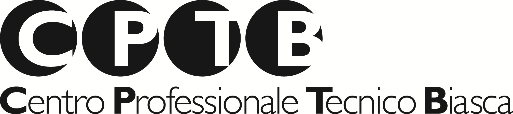
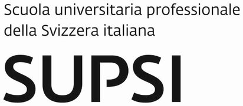
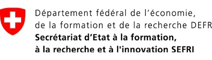
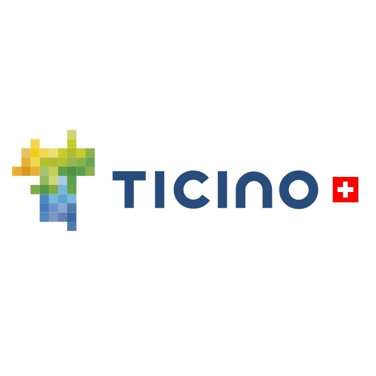
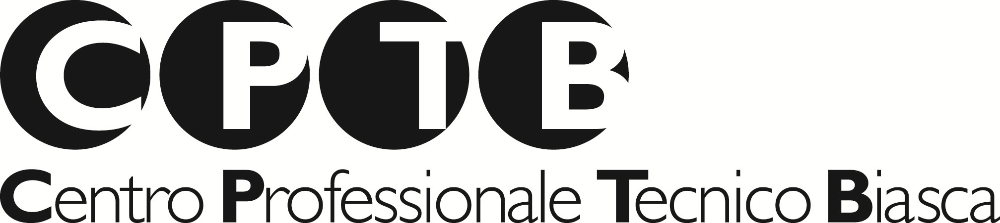
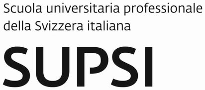
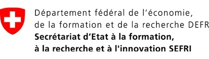
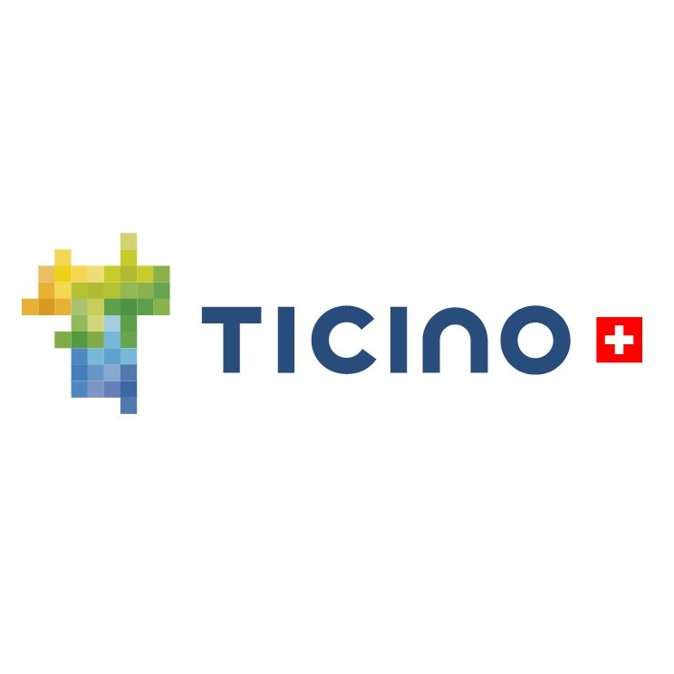

Indice di Specializzazione (LQ)
Concentrazione settoriale rispetto alla media nazionale (>1 = specializzato).
Un'analisi data-driven per la trasformazione del distretto da economia tradizionale a polo multipilastro.
Analisi comparativa del tessuto socio-economico e urbanistico.
Nato nel 2017 dalla fusione di Osogna, Lodrino, Iragna e Cresciano, Riviera si presenta come un territorio policentrico. Nonostante la fusione amministrativa, l'identità locale rimane frammentata, con nuclei che mantengono caratteristiche distinte.
Situata all’incrocio strategico delle tre valli (Leventina, Blenio e Riviera), Biasca funge da nodo cruciale per trasporti e commerci. Il comune mostra un equilibrio tra tradizione storica e una progressiva modernizzazione infrastrutturale.
Analisi comparativa 2017 vs 2023: Specializzazione e Clustering.
Concentrazione settoriale rispetto alla media nazionale (>1 = specializzato).
Intensità della presenza industriale locale (valori assoluti).
Numero di addetti per settore chiave: confronto diretto.
Mappatura competitiva e implicazioni dirette per lo sviluppo.
La Riviera presenta iper-specializzazioni industriali (granito, droni) che costituiscono vantaggi competitivi rari. Vanno scalate tramite cluster dedicati.
L'assenza di formazione terziaria è il principale collo di bottiglia. La creazione di un hub formativo (es. Campus) è prioritaria per trattenere valore.
Il turismo esperienziale (canyoning + cave) è sottoutilizzato. L'integrazione digitale dell'offerta può trasformare visite brevi in soggiorni ad alto valore.
Ascolto attivo: le sfide reali e le speranze dei residenti.
"A 52 anni, dopo il licenziamento, reinserirsi nel mercato locale è diventato molto complesso."
Tre direttrici di sviluppo per colmare i gap e valorizzare gli asset.
Creazione di un hub di competenza inter-aziendale presso la SPAI Biasca per ridurre il mismatch di competenze nel settore Pharma e Droni.
Piattaforma BIM integrata per unire le micro-imprese edili locali in una filiera digitale competitiva sui grandi appalti.
Sistema unificato di prenotazione e mobilità che connette canyoning, ristorazione nei grotti e pernottamento.
Istituzione tavoli tecnici SPAI/Aziende e Consorzi Edili.
Lancio piattaforma turistica digitale. Avvio primi corsi pilota "Duale 4.0".
Estensione modello formativo (Reskilling). Integrazione completa trasporti.
Collaborazioni strategiche e istituzionali per la crescita del territorio.
 






